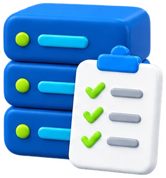
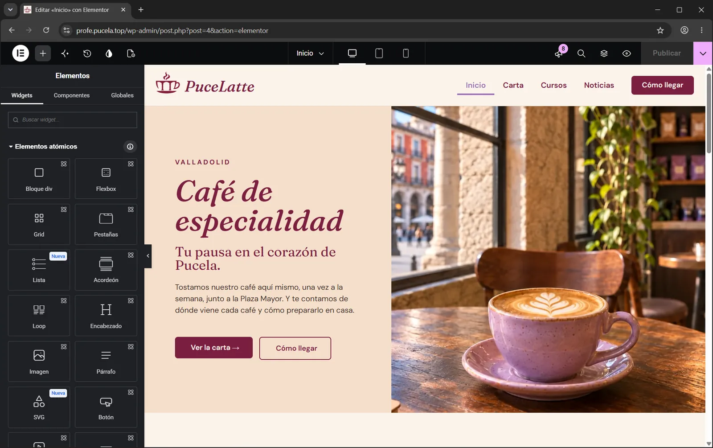
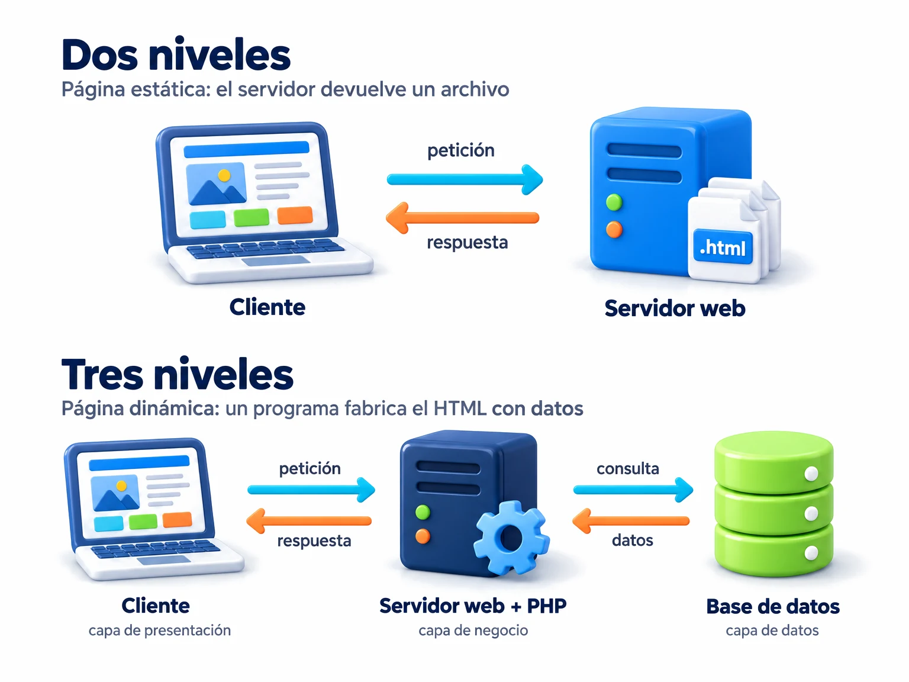
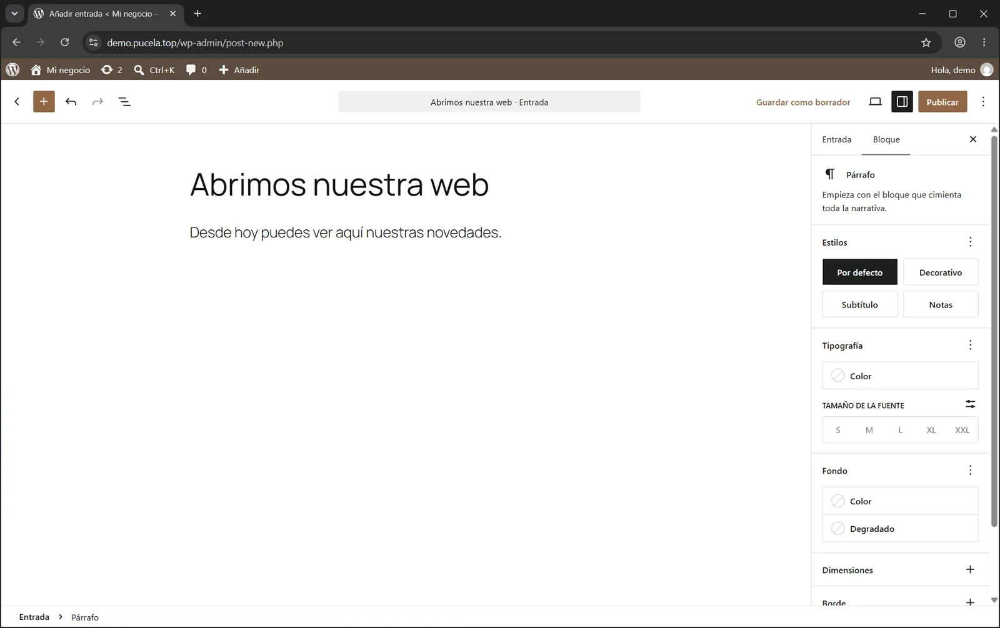
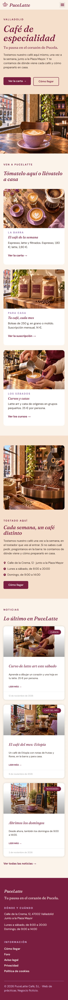
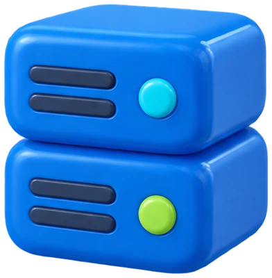

Unidad 3
Contenidos de la unidad
Quince sesiones, nueve de práctica. Cada uno hace la web de un negocio de Valladolid para un cliente: alguien que conoces o un compañero.
- 3.1Qué es un gestor de contenidos y el encargo
- 3.2Cómo funciona WordPress y cómo se instala
- 3.3PrácticaParte 1: instala WordPress a mano
- 3.4El panel de WordPress y Elementor
- 3.5PrácticaParte 2: construye la web, con sus textos y la ley
- 3.6PrácticaParte 3: déjala lista para el equipo de tu cliente
- 3.7Entrega, repaso y examen
Resultado de aprendizaje 1
Qué vas a saber hacer al terminar

Criterio a
Saber qué necesita WordPress e instalarlo a mano en un servidor

Criterios c y f
Personalizar el aspecto e instalar los plugins y menús que hacen falta

Criterio b
Crear usuarios con el rol justo para cada persona del equipo

Criterios e y g
Mantenerla actualizada y segura
Criterio h
Abrir un foro con zonas públicas y privadas

Criterios d, i y j
Probarla y hacer copias de seguridad que se puedan restaurar
Qué es un gestor de contenidos
Una web que el negocio pueda cambiar
PuceLatte es una cafetería de especialidad de Valladolid, inventada. Es el ejemplo de toda la unidad. Su equipo quiere publicar cada semana el café del mes y los cursos, y recibir mensajes. Nadie del equipo sabe HTML.
Con HTML y CSS: cada cambio es editar el archivo y volver a subirlo. Lo haría el técnico.
Con un gestor de contenidos: el equipo entra en un panel, escribe la noticia y pulsa Publicar.

40 %
De todas las webs del mundo están hechas con WordPress
Un gestor de contenidos permite publicar sin escribir código. Por eso lo usan la mayoría de las webs, y WordPress más que todos los demás juntos.
5,4 %
Shopify, el segundo. Wix, 4,2 %
1 de 3
Webs sin gestor: hechas a mano o con otra herramienta
Fuente: W3Techs, Usage statistics of content management systems, octubre de 2026. Netcraft, julio de 2026.
Pruébalo · 5 min
WordPress en tu navegador
WordPress Playground abre un WordPress de prueba en tu navegador, sin instalar nada.
Qué es un gestor de contenidos
Tipos según la licencia
Dos preguntas: qué puedes hacer con el programa y cuánto cuesta. Las respuestas se combinan.
Qué puedes hacer
Libre: puedes usarlo, estudiarlo, cambiarlo y compartirlo.
WordPress, Joomla, Drupal y Moodle (licencia GPL); PrestaShop (OSL)
Privativo: lo usas como dice la empresa, sin ver su código.
Wix, Squarespace, Shopify, SharePoint, Confluence
Cuánto cuesta
Gratis: pagas el servidor y tu tiempo.
WordPress, Joomla, Moodle
Freemium: lo básico gratis, lo avanzado de pago.
Wix, WordPress.com, Notion, muchos plugins (Elementor)
De pago: suscripción o licencia.
Shopify, SharePoint
Qué es un gestor de contenidos
Tipos según el uso
Hay gestores para casi cualquier tipo de web. Los de propósito general hacen de todo con plugins.
| Para qué | Ejemplos |
|---|---|
| Propósito general | WordPress, Joomla, Drupal |
| Blogs | Ghost, Blogger |
| Wikis | MediaWiki (la de Wikipedia), DokuWiki |
| Tiendas online | WooCommerce (dentro de WordPress), PrestaShop, Shopify, Adobe Commerce |
| Formación (LMS) | Moodle, Canvas, Blackboard |
| Foros | bbPress (dentro de WordPress), phpBB, Discourse |
Qué es un gestor de contenidos
CMS y otros sistemas de gestión
| Sigla | Qué gestiona | Ejemplo | En PuceLatte |
|---|---|---|---|
| CMS | El contenido de una web | WordPress | La web: carta, cursos, noticias |
| LMS | Cursos y alumnos | Moodle | — (un curso online de barista) |
| CRM | Clientes y su relación con el negocio | HubSpot, Salesforce | Los suscriptores y sus pedidos |
| ERP | Todo el negocio: compras, almacén, facturas | Odoo, SAP | El café verde, el stock y las facturas |
| KMS | El conocimiento interno | Notion, Confluence | Cómo se tuesta cada café |
Qué es un gestor de contenidos
¿Cuál escoger?
Se elige por lo que necesita el cliente y por quién va a mantener la web.
- ✓Qué tiene que hacer la web
- ✓El coste total: servidor, plugins y tiempo
- ✓Quién la actualiza y cuánto sabe
- ✓Comunidad y seguridad
- ✓Poder llevarse el contenido a otro sitio
| Si el cliente necesita… | Le recomiendas |
|---|---|
| Web de un negocio o tienda pequeña | WordPress |
| Solo vender online | Shopify o PrestaShop |
| Cursos con alumnos y notas | Moodle |
| Documentación interna del equipo | Notion o Confluence |
| Intranet de una empresa con Microsoft 365 | SharePoint |
| Web sencilla sin mantener nada | Wix, Squarespace o WordPress.com |
El encargo
La web de un negocio de Valladolid
La práctica es una web real, hecha para un cliente. Se entrega una vez, al final. Los textos los redactarás tú con IA a partir de la entrevista, y tu cliente los aprobará: así se trabaja hoy.
El negocio de alguien que conoces
Un familiar, un amigo, una tienda del barrio: esa persona es tu cliente. Con su permiso, datos legales inventados y en el pie «Web de prácticas».
Un negocio inventado
Tu cliente es un compañero, y tú eres el cliente de otro. Que ofrezca algo, que tenga noticias que publicar y clientes a los que les sirva un foro.
Las partes
- 0 · Entrevista a tu cliente, en casa
- 1 · Instalar WordPress
- 2 · Construir la web con sus textos
- · Revisión de tu cliente
- 3 · Dejarla lista para su equipo
- · Pruebas cruzadas y entrega
La entrevista con tu cliente
Entrevista a tu cliente y rellena el formulario. Con sus respuestas escribirás todos los textos de la web con IA: lo que no preguntes, la IA lo inventará.
Lo que tienes que preguntarle
- ✓El negocio: nombre, qué hace, dónde, desde cuándo
- ✓Para quién es la web y qué tiene que conseguir
- ✓Tres o cuatro servicios, con precio u horario
- ✓Qué le diferencia de otros negocios parecidos
- ✓Qué le preguntan siempre sus clientes
- ✓Cómo les habla y alguna frase suya
- ✓Qué noticias publicaría y para qué un foro
- ✓Contacto y horario
- ✓Colores, logo y una web que le guste
- ✓Quién actualizará la web y qué fotos te da
Dónde
En casa
Entrega
Antes de la sesión 4
Ejemplo resuelto: PuceLatte
Cafetería de especialidad junto a la Plaza Mayor. Tuesta su café una vez a la semana. Objetivo: que se apunten a los cursos y a la suscripción. Habla de tú, con humor pucelano.
Negocio real: con permiso de tu cliente, fotos solo con su permiso y sin personas reconocibles.
Cómo funciona WordPress
Parte pública y administración
La web que ve cualquiera y el panel desde el que se gestiona: lo que viste en Playground.
Parte pública (front-end): nombre.pucela.top

Administración (back-end): nombre.pucela.top/wp-admin

Cómo funciona WordPress
Lo que necesita WordPress para funcionar
En cada visita, PHP lee la base de datos y genera la página. Por eso el servidor necesita tres programas y un certificado.
- —Servidor web: Apache, Nginx o LiteSpeed. En el nuestro, Caddy
- —PHP 8.3 o superior
- —Base de datos: MySQL 8.0 o MariaDB 10.11, o superiores
- —HTTPS, para cifrar contraseñas y formularios
Dónde se comprueba: Herramientas › Salud del sitio › Información

Cómo funciona WordPress
Formas de tener WordPress
| Cómo | Qué haces | Cuándo |
|---|---|---|
| A mano en un servidor | Subes los archivos por SFTP y preparas wp-config.php | Lo que harás tú |
| Instalador de un hosting | Softaculous, en un hosting con cPanel: rellenas un formulario | Un negocio con hosting contratado |
| WordPress.com | Nada: te lo alojan y lo mantienen ellos | Webs sencillas, sin plugins propios |
| Playground o Studio | Lo abres en el navegador o en tu equipo | Practicar sin publicar |
En un hosting con cPanel, la base de datos la creas tú. En nuestro servidor ya está creada: te la da el profesor.
Cómo funciona WordPress
Una web de WordPress son archivos y una base de datos
Los archivos, en la carpeta web
- wp-admin/ — el panel
- wp-includes/ — el motor
- wp-content/ — lo tuyo
- themes/ plugins/ uploads/
- wp-config.php — los datos de conexión
La base de datos, en tablas
- wp_posts — entradas y páginas
- wp_users — usuarios
- wp_options — ajustes
- wp_comments — comentarios
- wp_terms — categorías y etiquetas
Al actualizar, WordPress cambia wp-admin y wp-includes. Lo tuyo está en wp-content y en la base de datos: una copia de seguridad lleva las dos cosas.
Cómo funciona WordPress
wp-config.php: los datos de conexión
Le dice a WordPress a qué base de datos conectarse. WordPress trae un modelo, wp-config-sample.php: lo copias como wp-config.php y lo rellenas.
- —
DB_NAME,DB_USER,DB_PASSWORD: los de tu ficha - —
DB_HOST:localhost, la base está en el mismo servidor - —Ocho claves nuevas, que protegen las sesiones
- —Tiene tu contraseña: no lo compartas ni lo pegues en una IA
// ** Ajustes de MySQL ** // define( 'DB_NAME', 'nombre' ); define( 'DB_USER', 'nombre' ); define( 'DB_PASSWORD', 'la-de-tu-ficha' ); define( 'DB_HOST', 'localhost' ); define( 'DB_CHARSET', 'utf8mb4' ); define( 'AUTH_KEY', 'pega aquí las ocho claves nuevas' ); // … siete claves más … $table_prefix = 'wp_'; define( 'WP_DEBUG', false );
Cómo se instala
SFTP: copiar archivos al servidor
SFTP copia archivos entre tu equipo y un servidor por una conexión cifrada. FTP no se usa: envía la contraseña sin cifrar.
Tus datos (en tu ficha)
- Servidor sftp.pucela.top · puerto 22
- Usuario y contraseña de tu ficha
- Carpeta pública: web (en cPanel,
public_html)
Tu cuenta solo copia archivos: no tiene terminal.

1 Conexión rápida · 2 tu equipo · 3 el servidor · 4 la cola de transferencias
Pruébalo · 10 min
Sube un archivo a tu carpeta
Antes de instalar WordPress, comprueba que llegas a tu carpeta del servidor.
Cómo se instala
Instalar WordPress a mano: seis pasos
1
Descarga WordPress en español y descomprímelo
2
Ten a mano los datos de tu base de datos
3
Copia wp-config-sample.php como wp-config.php y rellénalo
4
Sube por SFTP el contenido de wordpress a web
5
Abre https://nombre.pucela.top: título, usuario, contraseña y correo
6
Entra en el panel: /wp-admin
Un instalador como Softaculous hace estos pasos por ti.
Ordena los pasos
Los pasos salen desordenados. Ordénalos. Comprobar marca los que están en su sitio; Pista coloca uno; Otro ejercicio cambia de juego.
Instala WordPress a mano
Instala WordPress en tu subdominio sin instalador, con los datos de tu ficha.
Lo que tiene que tener
- ✓
wp-config.phpcon tus datos y ocho claves nuevas - ✓En la raíz: https://nombre.pucela.top/
- ✓Tu usuario distinto de «admin» y contraseña fuerte
- ✓El nombre del negocio de tu cliente como título
- ✓Los ajustes del primer día
- ✓Un usuario «profesor», Administrador
- ✓Las cinco pruebas superadas
Tiempo
2 sesiones
Revisión
Al final de la 2.ª
✓ Puedes usar
- FileZilla, VS Code, esta presentación y su chuleta
- La IA para entender un mensaje de error, sin pegar contraseñas ni
wp-config.php
✗ No puedes usar
- Instaladores automáticos
Parte 1 · Pasos 1 y 2
Descarga WordPress y ten a mano tu base de datos
- 1.En es.wordpress.org, Descargar. Descomprime el zip: sale la carpeta
wordpress - 2.Saca tu ficha: los datos de tu base de datos. Guárdala y no la compartas
La base de datos está vacía: WordPress crea sus tablas en el paso 5.
Tu ficha · base de datos
| Nombre de la base | nombre (como tu subdominio) |
| Usuario | nombre |
| Contraseña | la de tu ficha |
| Servidor | localhost |
En un hosting con cPanel: Bases de datos › Asistente de bases de datos MySQL. Creas la base y el usuario y le das «Todos los privilegios».
Parte 1 · Paso 3
Prepara wp-config.php
- 1.En la carpeta
wordpress, copiawp-config-sample.phpy llámalowp-config.php - 2.Ábrelo con VS Code y cambia las tres líneas marcadas por los datos de tu ficha
- 3.Abre api.wordpress.org/secret-key/1.1/salt/ y pega sus ocho líneas en lugar de las de las claves
- 4.Guarda
Que se llame wp-config.php y no wp-config.php.txt. En el Explorador: Ver › Mostrar › Extensiones de nombre de archivo.
// Así viene en wp-config-sample.php: define( 'DB_NAME', 'database_name_here' ); // Así queda en tu wp-config.php: define( 'DB_NAME', 'nombre' ); define( 'DB_USER', 'nombre' ); define( 'DB_PASSWORD', 'la-de-tu-ficha' ); define( 'DB_HOST', 'localhost' );
Parte 1 · Paso 4
Sube los archivos por SFTP
Se sube lo que hay dentro de la carpeta wordpress, no la carpeta.
Parte 1 · Pasos 5 y 6
El asistente y la primera entrada al panel
Abre tu dirección con https.
Parte 1
Si algo falla
| Lo que ves | Por qué pasa | Qué haces |
|---|---|---|
| «Error al establecer una conexión con la base de datos» | Algún dato de wp-config.php no coincide | Revisa nombre, usuario y contraseña con tu ficha |
| El asistente pide idioma y datos de la base | WordPress no encuentra wp-config.php | Que no se llame .txt y esté junto a wp-admin |
La web solo abre en /wordpress/ | Subiste la carpeta, no su contenido | Mueve el contenido a web con FileZilla |
| Página en blanco o error de PHP | Falta una comilla o un punto y coma en wp-config.php | Compáralo línea a línea con el modelo |
| Error 500 o web a medias | La subida se cortó | Vuelve a subir y sobrescribe lo de distinto tamaño |
| «No seguro» en el navegador | Instalaste con http:// | Ajustes › Generales: las dos direcciones con https:// |
Parte 1
Los ajustes del primer día
Antes de construir, deja el panel preparado.
Parte 1
Salud del sitio
Herramientas › Salud del sitio revisa tu WordPress y te dice qué arreglar.
- —Estado: errores críticos y recomendaciones, cada uno con su explicación
- —Información: versiones de WordPress, PHP y la base de datos
Abre la tuya y lee en voz alta a tu compañero la primera recomendación.

Antes de dar por buena la instalación
Cinco pruebas. Si alguna falla, «Si algo falla» te dice qué hacer.
- ✓HTTPS sin avisos: el candado del navegador
- ✓/wp-admin abre el panel
- ✓Salud del sitio sin errores críticos
- ✓«¿Has olvidado tu contraseña?» manda el correo y llega
- ✓Se abre en tu móvil, con datos
El panel de WordPress
El escritorio de WordPress
El menú de la izquierda lleva a todas las pantallas. Lo que aparece en él depende de tu rol y de los plugins.
- Escritorio: avisos y Actualizaciones
- Entradas, Medios, Páginas, Comentarios: el contenido
- Apariencia: temas y menús
- Plugins y Usuarios
- Herramientas: Salud del sitio
- Ajustes: Generales, Lectura, Comentarios…
Barra de arriba: el nombre de la web lleva a la parte pública. Ctrl + K busca cualquier pantalla.
El panel de WordPress
Entradas y páginas
WordPress guarda el contenido de dos formas. Según cuál elijas, sale en un sitio u otro.
Entrada
- Contenido con fecha: una noticia, un evento
- Lleva autor, categoría y etiquetas
- Sale en Noticias, la más nueva arriba, y en el RSS
- En PuceLatte: «El café del mes: Etiopía»
Página
- Contenido que no depende de la fecha
- Va en el menú o en el pie
- Se diseña con Elementor
- En PuceLatte: Inicio, Carta, Cursos, Aviso legal
Las entradas se clasifican con categorías (grupos grandes: Cursos, Café del mes, Novedades) y con etiquetas (palabras sueltas: latte art, Etiopía). Las dos son taxonomías: formas de clasificar.
El panel de WordPress
Escribir una entrada
Cada párrafo, imagen o botón es un bloque. El botón + añade uno.
- —A la derecha: categoría, etiquetas, imagen destacada (la del listado) y extracto (el resumen)
- —Estados: borrador, pendiente de revisión, programada, publicada
- —Imágenes que pesen poco y con texto alternativo
Escribe la primera noticia de tu negocio, con categoría y etiquetas. Guárdala como borrador.

El panel de WordPress
Temas: Hello Elementor
El tema decide el aspecto de toda la web. Si cambias de tema, el contenido se queda igual.
El panel de WordPress
Plugins
Un plugin añade a WordPress una función que no trae. Los de pago que se ofrecen gratis en otras webs suelen llevar código malicioso.
Elementor
Elementor: las cinco zonas del editor
Elementor diseña páginas viendo el resultado mientras editas: lo que ves es lo que obtienes (WYSIWYG).
Elementor
Contenedores y widgets
Una página de Elementor son contenedores con widgets dentro: las cajas de la UT2.
Parte 2
El mapa del sitio
Las páginas de la web y la herramienta con la que se hace cada una.
PuceLatte
Menú
Pie
Con el Theme Builder: la cabecera y el pie de todas las páginas, cada noticia, la página de Noticias y la de error 404.
El mínimo para tu negocio
- Inicio
- Tu sección principal: Servicios, Productos, Carta, Clases…
- Noticias
- Contacto, con formulario y mapa
- En el pie: Aviso legal, Privacidad y Cookies
- Foro, en la parte 3
Construye la web de tu negocio
Lo que tiene que tener
- ✓ Hello activo y un tema de reserva
- ✓ Los colores y las letras de tu cliente
- ✓ Las cinco plantillas del Theme Builder: cabecera, pie, noticia, Noticias y 404
- ✓ Inicio como portada y Noticias como página de entradas
- ✓ Las páginas del mapa del sitio, con textos de la entrevista aprobados por tu cliente
- ✓ Tres noticias con categoría, etiquetas e imagen destacada
- ✓ Formulario de contacto que funciona
- ✓ Aviso legal, privacidad y banner con Rechazar
- ✓ Bien en el móvil
- ✓ Si el negocio es real, el aviso «web de prácticas» en el pie
- ✓ La hoja de IA al día
✓ Puedes usar
- Elementor y los plugins de la lista
- Bloques de la biblioteca de Elementor, adaptados
- IA para textos, textos alternativos, textos legales, imágenes y CSS, apuntada en la hoja de IA
✗ No puedes usar
- Plantillas de web completa
- Plugins o temas de pago descargados de otras webs
- Datos que no salen de la entrevista o del cliente: precios, horarios, años, premios
Parte 2
Lo que lleva cada página (1 de 2)
| Página | Lo que lleva | En PuceLatte |
|---|---|---|
| Cabecera | Logo que lleva a Inicio; menú corto; un botón con la acción principal | Menú de cuatro y «Cómo llegar» |
| Pie | Dirección, teléfono, correo y horario; Aviso legal, Privacidad y Cookies; «© 2027 y el nombre» | Fondo vino, letra crema |
| Inicio | Bloque principal con imagen, título, una frase y botón; los servicios en resumen; las tres últimas noticias; una llamada final con botón | Vídeo de la taza y tres tarjetas |
| Sección principal | Cada servicio o producto con foto, título, texto y precio u horario | Carta con lista de precios |
Parte 2
Lo que lleva cada página (2 de 2)
| Página | Lo que lleva |
|---|---|
| Noticias | Las noticias, la más nueva arriba, con imagen destacada y extracto, con la plantilla Noticias del Theme Builder. Cada noticia, con la plantilla Noticia |
| Contacto | Formulario con nombre, correo y mensaje; la casilla de privacidad sin marcar y la primera capa; dirección, horario y mapa. El aviso llega a tu correo |
| Legales | Aviso legal y Privacidad con los datos de tu negocio (inventados si el negocio es real) |
| Cookies | Banner con Aceptar, Rechazar y Preferencias, igual de visibles; política de cookies; el mapa no carga hasta aceptar |
| Móvil | El menú se pliega; a 375 px nada se sale por la derecha; los botones se pulsan bien con el dedo |
Parte 2
Así puede quedar
La tuya tendrá otra distribución. Lo que tiene que estar es lo de la lista.
Sencilla y llamativa: títulos grandes, dos letras, fotos del propio negocio y un menú de cuatro enlaces.
profe.pucela.top

Parte 2 · Antes de Elementor
Las páginas, la portada y los menús
La cabecera necesita el menú: por eso esto va primero.
Parte 2 · IA
Los textos con IA: la entrevista es la instrucción
El cliente casi nunca tiene tiempo de escribir los textos. Los redacta el desarrollador con IA, a partir de lo que contó el cliente, y el cliente los aprueba.
Lo que le das
- 1 La entrevista entera
- 2 Qué página y con qué partes: «un título de 6 a 10 palabras, una frase, los servicios y un botón»
- 3 El tono y la longitud: «como habla el cliente, frases cortas, que se lea en el móvil»
- 4 La regla: «usa solo los datos de la entrevista; si falta uno, escribe [PREGUNTAR]»
Lo que revisas tú
- ✓ Cada dato sale de la entrevista: precios, horarios, años, premios. Lo que falta se pregunta
- ✓ Suena al negocio y no a un anuncio: fuera «líderes del sector», «pasión», «experiencia única»
- ✓ Se lee bien en el móvil
- ✓ Ortografía y el nombre del negocio bien escrito
Después, tu cliente lo lee y lo aprueba. Nunca pegues contraseñas, wp-config.php ni datos personales de nadie.
El texto de tu Inicio con IA
Escribe el texto de la página de Inicio de la web de este negocio. Entrevista con el cliente: [la entrevista entera] Partes del texto: un título de 6 a 10 palabras; una frase que diga qué es y para quién; los cuatro servicios, una línea cada uno con su precio; el horario; un botón para apuntarse a un curso. Tono cercano, de tú, frases cortas, español de España. Usa solo los datos de la entrevista; si te falta alguno, escribe [PREGUNTAR].
Haz lo mismo con la entrevista de tu negocio: pide el texto de tu Inicio, marca lo que corriges y apúntalo en tu hoja de IA.
Lo que dio la IA, revisado
Tu pausa en el corazón de Pucela ✓
Café de especialidad junto a la Plaza Mayor. Lo tostamos aquí mismo, una vez a la semana. Para tu café entre clases o reuniones, y para que aprendas a prepararlo bien en casa.
- La barra. Espresso, 1,80 €. Latte, 2,80 €. ✓
- Café para casa. Bolsa de 250 g, [PREGUNTAR] €. O suscríbete y recíbelo cada mes por 14 €.
- Cursos y catas. Latte art y cata de orígenes, los sábados. 25 €. ✓
- Desayunos. Bollería de un obrador de Valladolid, [PREGUNTAR] €.
De lunes a sábado, de 8:00 a 20:00. Domingo, de 9:00 a 14:00. ✓
[PREGUNTAR] Faltaba en la entrevista: se pregunta al cliente.
tachado Inventado: la entrevista no dice que se envíe.
✗ Falta el humor pucelano que pidió el cliente.
Parte 2
Fotos, logo e imágenes
Las fotos de un negocio real las da el cliente. Lo que falte se busca con licencia libre o se genera, y se apunta de dónde sale.
- —Del cliente, con su permiso y sin personas reconocibles
- —Bancos libres: Pexels, Unsplash, Openverse
- —Con IA: ambientes y objetos, sin personas reales, marcas ni logos de otros. En la hoja de IA
- —Logo: el suyo; si no tiene, uno de texto con su letra y su color, que aprueba el cliente
- —Peso: WebP o JPG ligeros. Texto alternativo: la IA lo propone; tú compruebas que dice lo que se ve
Vídeo de la portada de PuceLatte, generado con IA a partir de su último fotograma.


Parte 2
Colores y letras para toda la web
Se ponen una vez y se usan en toda la web, como las variables de la UT2.
Parte 2 · Theme Builder
El Theme Builder: las plantillas de tu web
Una plantilla se diseña una vez y sale en muchas páginas. Su condición dice dónde sale.
| Plantilla | Tipo | Condición | |
|---|---|---|---|
| 1 | Cabecera | Header | Entire Site |
| 2 | Pie | Footer | Entire Site |
| — | Las páginas | No son plantillas: una a una, con Elementor | |
| 3 | Noticia | Single Post | Entradas |
| 4 | Noticias | Archive | Entradas archive, Categorías, Etiquetas |
| 5 | Error 404 | Error 404 | 404 Page |
Siempre igual: Elementor › Theme Builder › el tipo › + › diseñas › Publicar › Add condition › Save & Close.

Theme Builder 1 de 5
La cabecera, paso a paso
Theme Builder 2 de 5
El pie, paso a paso
Se diseña una vez y sale en todas las páginas.
Las páginas
El Inicio: cajas dentro de cajas
Antes de empezar, en cada página: engranaje › Esconder título y Estructura de página Elementor ancho completo.
Las páginas
Carta, Cursos y Cómo llegar
Cada página se abre ya con la cabecera y el pie. La banda de arriba se hace una vez y se copia.
Theme Builder 3 de 5
Cada noticia
Una plantilla para todas las noticias: sus widgets cogen los datos de la noticia que se abre.
Theme Builder 4 de 5
La página de Noticias
Noticias es la página de entradas: la diseña una plantilla Archive, no la página.
Theme Builder 5 de 5
La página de error 404
Sale cuando una dirección no existe. Dice qué ha pasado y da una salida.
Parte 2
La versión móvil
Elementor adapta la página a tableta y móvil. Tú revisas cada vista y corriges lo que no queda bien.
- —Con el selector en Móvil, lo que cambies solo afecta al móvil: tamaño de letra, márgenes, de fila a columna, ocultar un elemento
- —El widget Menú se pliega en un botón
- —Prueba final: DevTools a 375 px, como en la UT2
Abre tu web en tu móvil. Apunta una cosa que corregir y corrígela en la vista Móvil.

Parte 2
CSS adicional
Si Elementor no tiene la opción que buscas, añades una regla de CSS, como en la UT2.
Dónde: Apariencia › Personalizar › CSS adicional o, en Elementor, Ajustes del sitio › CSS personalizado.
Para saber la clase de un elemento: clic derecho › Inspeccionar.
Puedes pedir a la IA una regla concreta: «botones redondeados que cambien de color al pasar el ratón». Antes de pegarla, pruébala en DevTools y entiende qué hace cada línea.
.elementor-button {
border-radius: 999px;
}
.elementor-button:hover {
background-color: #9C6FB5;
}
¿Dónde se elige qué página se ve al entrar en la web?
Selecciona una opción.
Parte 2 · La ley
Aviso legal
La web de un negocio dice quién está detrás. Lo pide la LSSI (art. 10).
- ✓Titular: nombre o razón social
- ✓NIF
- ✓Dirección y correo
- ✓Si es sociedad, sus datos del Registro Mercantil
La IA adapta un modelo con los datos de tu negocio; tú compruebas que está cada dato. En un negocio real, lo revisa un profesional.
El aviso legal de PuceLatte
Esta web es propiedad de Pucelatte Café, S.L., con NIF B00000000 y domicilio en Calle de la Crema, 12, 47002 Valladolid. Inscrita en el Registro Mercantil de Valladolid. Correo: hola@pucelatte.example.
Datos ficticios: web de prácticas.
Parte 2 · La ley
Privacidad y el formulario
Si la web recoge datos personales, explica para qué antes de que la persona los envíe (RGPD, art. 13).
Parte 2 · La ley
Cookies y el banner
Cookies técnicas: sin permiso. El resto (estadísticas, publicidad, el mapa de Google): con permiso. Rechazar tan visible como Aceptar (AEPD).
Parte 2 · La ley
Configura Complianz, paso a paso
Instala Complianz y sigue su asistente. Si te pide el correo para mandarte trucos: «No, gracias».
La revisión del cliente
Enséñale la web a tu cliente, en el ordenador y en su móvil, y apunta lo que pide.
- 1.¿Se entiende en cinco segundos a qué se dedica el negocio?
- 2.¿Está todo lo que pediste?
- 3.¿Los textos dicen las cosas como tú las dirías?
- 4.¿Qué cambiarías?
La hoja de la revisión
| Cambio pedido | ¿Lo haces? | Por qué |
|---|---|---|
| Los precios de los desayunos | Sí | Faltaban: eran [PREGUNTAR] |
| Más humor en el Inicio | Sí | Lo pidió en la entrevista |
| Música al entrar | No | Molesta y gasta datos en el móvil |
Lista para el equipo de tu cliente
Lo que tiene que tener
- ✓ Usuarios: tu cliente (Editor), un empleado (Autor), alguien en prácticas (Colaborador) y dos clientes (Suscriptor)
- ✓ Los comentarios configurados
- ✓ Un foro público, uno privado, la página Foro, la plantilla de cada foro y la página de normas
- ✓ La lista de seguridad, con
DISALLOW_FILE_EDITy verificación en dos pasos - ✓ Todo actualizado y las automáticas activadas
- ✓ Independent Analytics con visitas
- ✓ Una copia con UpdraftPlus, descargada, restaurada y programada
- ✓ Salud del sitio sin errores críticos
- ✓ Los cambios de la revisión del cliente
✓ Puedes usar
- FileZilla para editar
wp-config.php - Los plugins de la lista
- La IA para redactar las normas del foro y entender un aviso
✗ No puedes usar
- Plugins fuera de la lista sin preguntar
- El usuario «profesor» para tus pruebas
- La IA para configurar: la configuración se hace a mano
Parte 3
Usuarios y roles
Cada persona entra con su propio usuario. Su rol decide qué puede hacer.
| Rol | Qué puede hacer | En PuceLatte |
|---|---|---|
| Administrador | Todo: aspecto, plugins, usuarios y ajustes | Marta, la dueña, y tú |
| Editor | Publica y edita el contenido de todos; modera comentarios | Óscar, el encargado |
| Autor | Publica y edita sus entradas; sube imágenes | Lucía, barista: los cursos |
| Colaborador | Escribe sus entradas; las publica otro | Rubén, en prácticas |
| Suscriptor | Entra y edita su perfil | Los socios del club |
Usuarios › Añadir usuario › Rol. Tu cliente: Editor. Publica todo, pero no toca plugins ni ajustes.
Crea el usuario de tu cliente y entra con él en una ventana de incógnito. ¿Qué no ve?
Parte 3
Actualizaciones
Actualizar corrige fallos y, sobre todo, cierra agujeros de seguridad.
- —Núcleo: las versiones menores (7.1 → 7.1.4) se instalan solas
- —Plugins y temas: Plugins › columna «Actualizaciones automáticas» › Activar
- —Todo junto: Escritorio › Actualizaciones
- —Para una versión mayor: copia, actualiza, comprueba
91 %
de los fallos de seguridad de WordPress en 2025 estaban en plugins (Patchstack, 2026). Pocos plugins, de confianza y al día.
Después de las vacaciones: ¿cuántas actualizaciones tienes pendientes?

Parte 3
La seguridad de tu WordPress
| Qué | Dónde | Por qué |
|---|---|---|
| Usuario distinto de «admin» y contraseña fuerte | Al instalar; Usuarios › Perfil | Los robots prueban primero «admin» y las contraseñas comunes |
| Registro cerrado | Ajustes › Generales | Solo el administrador crea usuarios |
| El rol justo para cada persona | Usuarios | Menos daño si roban una contraseña |
| Actualizaciones automáticas | Plugins | Los agujeros se cierran sin esperar |
| Borrar lo que no se usa | Plugins; Apariencia › Temas | El código que no se usa también se puede atacar |
| Sin editor de archivos | wp-config.php, por SFTP: DISALLOW_FILE_EDIT | Quien entre en el panel no puede cambiar el código |
| Verificación en dos pasos | Two Factor, en Usuarios › Perfil | Además de la contraseña, un código de la app del móvil |
| HTTPS | Ajustes › Generales | Cifra contraseñas y formularios |
Parte 3
Comentarios: quién escribe y qué se publica
En Ajustes › Comentarios se decide quién comenta y qué pasa antes de que un comentario se vea.
Lo elegido en PuceLatte
- ✓Comentarios en las entradas nuevas
- ✓Cerrar los de entradas de más de 30 días
- ✓Aprobar cada comentario a mano: lo hace Óscar, el editor
- ✓Retener los que llevan dos enlaces o más: suelen ser spam

Parte 3
El foro
Con el plugin bbPress, WordPress tiene foros, y cada foro tiene sus reglas de acceso.
Parte 3
Sindicación: el RSS
El RSS es la lista de lo último publicado, escrita en XML. Otros programas la leen sin entrar en la web.
- /feed/ todas las entradas
- /category/cursos/feed/ una categoría
- /comments/feed/ los comentarios
WordPress lo crea solo. En Ajustes › Lectura eliges cuántas entradas lleva.
Abre nombre.pucela.top/feed/ y busca tus tres noticias.
<rss version="2.0">
<channel>
<title>PuceLatte</title>
<link>https://profe.pucela.top</link>
<description>Café de especialidad en Valladolid</description>
<language>es</language>
<item> … la noticia más nueva … </item>
<item>
<title>El café del mes: Etiopía</title>
<link>https://profe.pucela.top/el-cafe-del-mes-etiopia/</link>
<pubDate>Mon, 09 Nov 2026 08:00:00 +0000</pubDate>
</item>
</channel>
</rss>
Parte 3
Informes de acceso: quién visita la web
Cuántas visitas tiene la web, qué páginas se ven y desde dónde llegan.
| Cómo | Cookies |
|---|---|
| Estadísticas del hosting | No: salen de los registros del servidor |
| Independent Analytics | No: guarda los datos en tu servidor. La de tu web |
| Google Analytics | Sí: necesita el permiso del banner |

Parte 3
Copias de seguridad
Una copia sirve si se puede restaurar. Lleva las dos partes de WordPress: los archivos y la base de datos.
Cada cuánto
Cada semana en una web pequeña; cada día si cambia a diario. Y siempre antes de actualizar.
Dónde
Al menos una copia fuera del servidor: tu equipo o la nube.
Tipos
Completa: todo. Incremental: lo cambiado desde la última copia. Diferencial: desde la última completa.
Tres formas
Las del hosting, automáticas
UpdraftPlus: programa las copias y restaura desde el panel. La de tu web
A mano: bajar wp-content por SFTP y exportar la base de datos
Parte 3
Copia y restaura tu web con UpdraftPlus
La prueba de que una copia sirve es restaurarla: se borra algo a propósito y se recupera.
Parte 3
Pruebas de funcionamiento
Probar es usar la web como la usarán los demás y apuntar lo que falla. Lo hace mejor otra persona: tú ya sabes dónde pulsar.
Para cada prueba
| Qué pruebo | Qué debería pasar | Qué pasa | Qué corregí |
|---|
- Enlaces: cada uno del menú y del pie
- Formulario: el aviso llega al correo
- Banner: al rechazar, solo cookies técnicas y el mapa no carga
- Móvil: DevTools a 375 px y un móvil de verdad
- Roles: un Colaborador no publica; un Editor no ve Plugins
- Foro: sin usuario no se ve el privado
- Salud del sitio: sin errores críticos
- Copia: existe y se descarga
Empareja
Seis parejas por juego. Otro ejercicio cambia de tema: los roles, dónde se hace cada cosa y los plugins.
Después de actualizar un plugin, la web dice «Ha habido un error crítico en esta web».
Selecciona una opción.
Entrega
Lista para publicar
Antes de entregar una web al cliente se repasa esta lista.
En tu práctica (va en la hoja de pruebas)
- ✓ Icono del sitio
- ✓ Página 404 con el diseño de la web
- ✓ Fotos ligeras, en WebP
- ✓ El aviso del formulario llega al correo
- ✓ Contraste suficiente
- ✓ Títulos en orden: un
h1por página - ✓ Se usa con el teclado
- ✓ Marcado «Pedir a los motores de búsqueda que no indexen este sitio» (Ajustes › Lectura)
En un negocio real, al publicar
- — Quitar esa marca para que los buscadores la encuentren
- — Título y descripción de cada página
- — El mapa del sitio:
wp-sitemap.xml - — Darla de alta en Google Search Console
- — El Perfil de Empresa de Google, con la dirección y el horario
Prueba la web de un compañero
Un compañero prueba tu web con la hoja de pruebas y tú la suya. Corrige lo que salga.
La web se queda publicada hasta que salgan las notas.
Lo que entregas en Classroom
- ✓La dirección de tu web
- ✓La hoja de pruebas que te hizo tu compañero, con lo que corregiste
- ✓La hoja de la revisión del cliente
- ✓La hoja de IA
Examen de teoría
Sin apuntes ni IA. Muchas preguntas llevan una captura del panel.
Qué entra
Qué es un gestor de contenidos y sus tipos; cómo funciona y cómo se instala WordPress; SFTP y wp-config.php; el panel y Elementor; la ley y las cookies; usuarios y roles; actualizaciones y seguridad; comentarios y foro; RSS; informes; copias y pruebas.
Cómo prepararlo
El resumen, las dos chuletas con su Modo repaso, los quiz y los interactivos de la unidad.
Unidad 3
Resumen de la unidad
Un gestor de contenidos guarda el contenido en una base de datos y el aspecto en un tema. Se publica sin escribir código.
WordPress necesita servidor web, PHP y base de datos. Se instala subiendo sus archivos por SFTP y preparando wp-config.php.
Los textos se redactan con IA a partir de la entrevista y los aprueba el cliente. Las páginas se montan con Elementor.
La web de un negocio lleva aviso legal, privacidad y un banner de cookies que deja rechazar.
Cada persona con su usuario y el rol justo. Todo actualizado, pocos plugins y verificación en dos pasos.
Una copia sirve si se ha restaurado. Una web está terminada cuando otra persona la ha probado.

Chuleta de WordPress · 1 de 2
Instalar
Lo que necesitas para instalar WordPress a mano. Pulsa el título de un grupo para ir a su explicación; Modo repaso tapa lo que es cada cosa.
sftp.pucela.topServidor SFTP, puerto 22webLa carpeta pública (en cPanel, public_html)nombreBase de datos y su usuariolocalhostServidor de la base de datosDB_NAMENombre de la base de datosDB_USERUsuario de la base de datosDB_PASSWORDSu contraseñaDB_HOSTDónde está: localhostAUTH_KEY …Ocho claves nuevas: protegen las sesionesDISALLOW_FILE_EDITQuita el editor de archivos del panel/wp-adminEl panel/feed/El RSS de las entradas/wp-sitemap.xmlEl mapa del sitio para buscadores/foro/La página del forowp-admin/El panel; se sustituye al actualizarwp-includes/El motor; se sustituye al actualizarwp-content/Lo tuyo: temas, plugins e imágeneswp_postsEntradas y páginaswp_usersUsuarioswp_optionsAjustesError de conexiónUn dato de wp-config.php no coincidePide idioma y datosNo encuentra wp-config.php: ¿.txt?Solo en /wordpress/Subiste la carpeta, no su contenidoPágina en blancoFalta una comilla o un punto y coma«No seguro»Direcciones con http: cámbialas a httpsError críticoUn plugin: desactívalo por correo o por SFTP
Chuleta de WordPress · 2 de 2
El panel y el mantenimiento
Ajustes › GeneralesTítulo, https y registro cerradoAjustes › LecturaPortada, Noticias y no indexarAjustes › Enlaces permanentesDirecciones que se leenAjustes › ComentariosQuién comenta y moderaciónApariencia › MenúsLos enlaces del menúSalud del sitioEn Herramientas: qué arreglar y versionesContenedorUna caja: en fila o en columnaWidgetEncabezado, texto, imagen, botón…Ajustes del sitioColores y letras de toda la webTheme BuilderCabecera, pie, noticia, Noticias y 404 (Pro)Copia, actualiza, compruebaAntes de una versión mayorBorrar lo que no se usaPlugins y temasRestaurarLa prueba de que la copia sirveDos pasosApp del móvil y códigos de recuperaciónAdministradorTodoEditorTodo el contenido; sin plugins ni ajustesAutorPublica lo suyoColaboradorEscribe; publica otroSuscriptorSu perfil y el foro privadoAviso legalQuién está detrás (LSSI)PrivacidadQué datos y para qué (RGPD)Primera capaEl resumen bajo el formularioBannerRechazar igual de visible que AceptarLo que le dasEntrevista, página y partes, tono, «solo estos datos»Lo que revisasDatos, tono y móvil[PREGUNTAR]Lo que falta: se pregunta al clienteQuién apruebaEl clientePara ampliar
Recursos y documentación
Cuando dudes de un ajuste, la respuesta está en la documentación oficial. Para probar sin miedo, Playground.
Enlaces consultados el 14 de noviembre de 2026.
- WordPressAyuda en español: es.wordpress.org/support y cursos en learn.wordpress.org
- AdministrarRequisitos,
wp-config.php, roles y seguridad: developer.wordpress.org/advanced-administration - PracticarWordPress Playground: playground.wordpress.net
- ElementorDocumentación: elementor.com/help
- PluginsbbPress, UpdraftPlus, Complianz, Two Factor e Independent Analytics, en es.wordpress.org/plugins
- SFTPFileZilla: filezilla-project.org
- CookiesGuía sobre el uso de las cookies, AEPD, julio de 2023: aepd.es
- DatosCuota de los gestores: W3Techs. Seguridad: informe de Patchstack, 2026
- NormativaCurrículo del ciclo de Sistemas Microinformáticos y Redes en Castilla y León, módulo 0228. BOCyL n.º 173, 9 de septiembre de 2009.